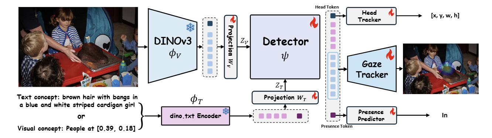

Promptable Gaze
First paradigm introducing Promptable Gaze Target Estimation (PGE).
CVPR 2026
A promptable, concept-driven foundation model for end-to-end gaze target estimation in the wild.
First paradigm introducing Promptable Gaze Target Estimation (PGE).
Natural language and visual prompts guide subject localization and gaze prediction.
SAM 3 style architecture with robust in/out-frame and heatmap estimation.
Existing gaze target methods often rely on brittle, multi-stage pipelines and explicit intermediate annotations. GazeAnywhere reformulates this problem with flexible prompts and solves subject localization plus gaze reasoning in a single model.
GazeAnywhere fuses frozen visual and text encoders with a transformer-based detector, jointly predicting subject identity, in/out-of-frame presence, and gaze target heatmaps.

Replace this block with your key quantitative metrics, benchmark table, and qualitative visualizations. The layout is intentionally ready for quick extension with paper figures.
@inproceedings{cao2026gaze,
title={Gaze Target Estimation Anywhere with Concepts},
author={Cao, Xu and Yang, Houze and Gunda, Vipin and Zhou, Zhongyi and Xu, Tianyu and Kowdle, Adarsh and Kim, Inki and Rehg, James M},
booktitle={Proceedings of the IEEE/CVF Conference on Computer Vision and Pattern Recognition},
year={2026}
}